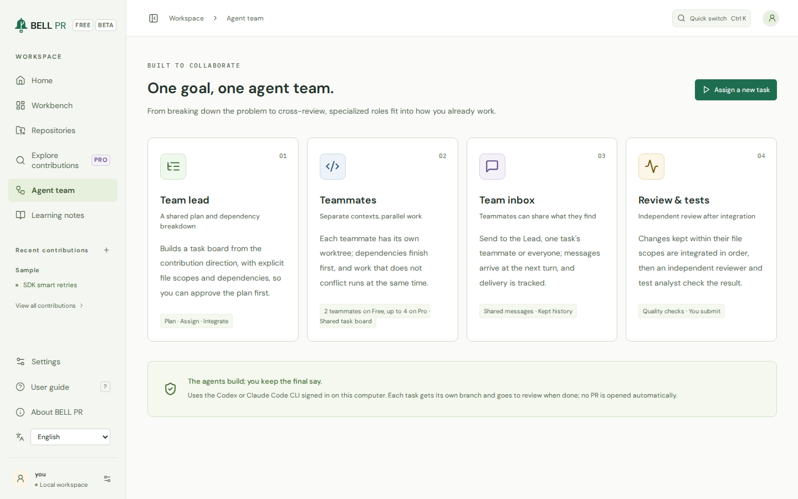

Local-first · No BELL cloud · No telemetry
Contribute to open source with an AI team, and understand every line you ship.
BELL PR is a workbench that runs on your own machine. It analyses a project, proposes contribution directions, runs a small agent team in isolated git worktrees, explains every changed file in plain language, and drafts a pull request that follows the project's own rules. Nothing is published until you have reviewed and approved every file.
npx bell-prNeeds Node.js 22 or later, Git, the GitHub CLI, and the Codex CLI or Claude Code. Free to start, with no account.
From an unfamiliar repository to a reviewed Draft PR
A short tour of the sample project, from analysis to the published draft.
How it works
Learn while you contribute
The agents do the legwork. You stay in charge of every decision, and you finish knowing the code you changed.
-
Point it at a project
BELL PR reads the repository and its contribution guidelines, then proposes contribution directions with verified recommendations.
-
Approve the plan
Pick a direction. The Lead plans the work and you approve or revise the plan before any code is written.
-
Let the team work
A Lead, teammates, a Reviewer and a Test analyst work in isolated git worktrees, with the AI coding CLI you already use.
-
Review, understand, publish
Read a plain-language explanation of every changed file and ask follow-up questions. Then publish a Draft PR that follows the project's rules.
A closer look
What you work with
Screens from the sample project that comes with BELL PR. Select one to see it at full size.
-

Understand the project firstThe analysis explains what the project does, who uses it and where to start reading, before you choose a contribution direction. -

One goal, one agent teamA Lead plans the work, teammates build it in their own worktrees, and a Reviewer and a Test analyst check the result. -

Every change, explainedRead each changed file next to a plain-language explanation with examples, mark it reviewed, and ask about any line. -

A pull request that fits the projectThe draft follows the project's rules and template, and whether to mention AI help is your decision.

Built for contributions you can stand behind
-
Plain-language explanations
Each changed file comes with what changed and why, examples and trade-offs, and a suggested review order. Ask follow-up questions right next to the diff.
-
You approve every change
Nothing is published until you have reviewed every file and approved the draft. Re-run the Reviewer and the Test analyst whenever you want a second look.
-
Rule-aware pull requests
Drafts follow the target project's own contribution rules and pull request template, and preflight checks run before you publish a Draft PR.
-
Isolated agent team
Agents work in separate git worktrees on your machine. You see the plan, the team inbox and every subtask as it happens.
-
Learning notes
Keep what you learned from each contribution on a notes page. Pro exports a learning record as Markdown.
-
Your tools, your accounts
Works with the OpenAI Codex CLI or the Claude Code CLI you installed and signed in to, and with the GitHub CLI. Usage counts against your own account.
Free covers the whole loop. Pro adds scale.
Free runs one contribution at a time, from analysis to Draft PR. Pro adds bigger and parallel agent teams, GitHub-wide discovery and coaching on maintainer feedback. Every plan keeps the human review gate.
| Feature | Plan | Limits |
|---|---|---|
| Repositories and contribution runs | Free | Unlimited repositories and runs |
| Project analysis with verified recommendations | Free | Up to 5 recommendations per analysis; re-analysis is allowed. Recommendations you already generated (up to 30) stay visible after a downgrade. |
| More recommendations ("Generate 5 more", up to 30 per project) | Pro | Free: 5. Pro: up to 30 per project. |
| Agent team size | Free (limited) | Free: Lead, 2 teammates, Reviewer and Test analyst. Pro and trial: 3 or 4 teammates. |
| Work on more than one contribution at a time | Free (limited) | Free: one contribution at a time; others wait in the queue. Pro: up to your configured limit (2 by default, at most 8). Publishing is paced the same on every plan. |
| Plan approval and revision, team inbox, retry of failed subtasks | Free | Up to 3 plan revisions |
| Diff review, explanations, follow-up chat, notes, suggested review order | Free | No limit |
| Explain it back before approval | Free | On by default; you can turn it off in Settings, and runs approved without it are marked |
| Re-run Reviewer and Test analyst | Free | No limit (part of the human review safety gate) |
| Rule-aware PR draft, preflight checks, publishing a Draft PR | Free | Human approval is required on every plan |
| Project-rule, issue, reviewability and pacing checks | Free | On every plan; no plan can skip them |
| Syncing a run onto the latest target branch, agent conflict resolution, updating a project's local clone | Free | No limit (unpublished runs and published PRs) |
| Learning notes page | Free | No limit |
| Practice deck and learning counts | Free | No limit |
| Complete learning record export (Markdown) | Pro | Free: not available (the learning page stays Free) |
| Coach debrief from your own records | Pro | Free: not available; the sample project shows an example labelled PRO. Debriefs you already have stay readable after a downgrade. |
| Read maintainer feedback and compare it with your forecast | Free | No limit |
| AI follow-up rounds on maintainer feedback | Pro | Free: not available. Follow-up rounds already on a run stay readable after a downgrade, and an open round can still be reviewed, pushed, stopped or discarded. |
| Discovery (GitHub-wide recommendations) | Pro | Free: labelled sample results only. Results you already have stay readable, and a running discovery can still be cancelled. |
| Web access for agents | Pro | Free: off. Pro: off until you turn it on. Claude Code may then open pages on GitHub's own sites only; the Codex CLI uses OpenAI's web search. |
| Deep reasoning efforts (xhigh, max, ultra) | Pro | Free: choose none to high. Leaving the effort on "Default" uses the model's own default effort on every plan. |
| Providers, model choice, Efficiency modes | Free | Codex CLI and Claude Code, all models, all efficiency modes |
| Sample project / demo (Pro features shown with sample data) | Free | Sample data in your browser only |
| 14-day Pro trial | Free | One per data directory, started only when you choose (in the app or with bell-pr license trial) |
| Pro license term and updates | Pro | Per named user; perpetual, with 12 months of updates from the date your key is issued |
Privacy and trust
Your machine, your accounts, your decision
-
Local-first
BELL PR runs on your computer and listens on 127.0.0.1 by default. Repositories, runs and notes stay in its data directory, and you can delete them from the app.
-
No BELL cloud
There is no BELL PR server and no account. Your code goes only where your own AI coding CLI and the GitHub CLI send it.
-
No telemetry
No analytics, usage data or crash reports, in the app or on this site. The app loads nothing from other sites.
-
Offline license
A Pro license key is checked on your machine. There is no license server, and activating a key sends nothing anywhere.
Questions
What do I need to run BELL PR?
macOS, Linux, or Windows through WSL2; Node.js 22 or later (or Docker); Git; the GitHub CLI, signed in; and one AI coding CLI, installed and signed in: the OpenAI Codex CLI or Claude Code. The install guide has the details.
Whose AI account does it use?
Yours. BELL PR runs the AI coding CLI you installed and signed in to: the Codex CLI, or the Claude Code CLI with your Claude plan or Anthropic API key. Usage counts against your own account.
Does it open pull requests on its own?
No. BELL PR publishes a Draft PR only after you have reviewed every changed file and approved the draft, on every plan.
Does my code go to BELL PR?
No. There is no BELL PR cloud. Your code goes to the AI provider behind the coding CLI you chose and to GitHub, under your own accounts and their terms.
What is free?
The whole contribution loop, one contribution at a time, with a Lead, two teammates, a Reviewer and a Test analyst. A 14-day Pro trial starts only when you choose. See pricing for the full comparison.
Does the pull request say that AI helped?
Only if you choose. The draft can end with an editable line saying that AI coding agents helped prepare the change and that you reviewed it. The line is off unless you turn it on, or the project's own rules ask for a disclosure. Follow each project's rules on AI-assisted contributions; the terms explain what responsible use means.
Is BELL PR made by GitHub, OpenAI or Anthropic?
No. BELL PR is an independent product. It works with tools from those companies that you install and sign in to yourself.